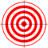

Mécaniques du jeu
Le jeu Poly-Showakusei est fortement inspiré du jeu Asteroids. Le but du jeu est de défendre un nombre minimal de stations spatiales contre les astéroïdes qui se baladent. Chaque partie peut durer de 30 secondes à 5 minutes. La partie se termine seulement lorsque le temps est écoulé.
Voici les objets de base qui se retrouvent sur la zone de jeu :
Le vaisseau est contrôlé par le joueur. Il est possible d'avancer, de tourner vers la gauche ou vers la droite et de tirer de petits projectiles.
La barrière empêche le vaisseau et les astéroïdes de passer. Elle ne fait rien de spécial.
Le bonus accélérateur permet d'aller plus vite pendant une courte période de temps. Le bonus est activé lorsque le vaisseau passe dessus. Il est ensuite inactif pendant 5 secondes.
Le malus d'inversion de touches inverse certains contrôles du vaisseau, soit avancer, aller vers la gauche et aller vers la droite. L'inversion dure quelques secondes et est activée lorsque le vaisseau passe dessus. Il est ensuite inactif pendant 5 secondes.
Les portails permettent au vaisseau et aux astéroïdes de passer d'un point à l'autre de la zone de jeu très rapidement.
La station spatiale se retrouve dans le mode Partie rapide et dans le mode Campagne. Il s'agit des structures à défendre pour pouvoir gagner la partie. Une station spatiale a de 1 à 100 points de vie. La station est détruite lorsque son nombre de points de vie tombe à 0.
Le bonus de tir multiple permet de tirer 3 projectiles à la fois pendant quelques secondes. Les tirs supplémentaires se font de par et d'autre du vaisseau, à angle égal. Le bonus est activé lorsque le vaisseau passe dessus. Il est ensuite inactif pendant 5 secondes.
Partie rapide
La partie rapide peut être jouée seul ou à 2 joueurs. Le second joueur peut être un humain, à condition que les deux utilisateurs soient connectés, ou qu'ils jouent sur le même ordinateur, et qu'ils aient choisi la même zone de jeu.
Condition de victoire
- Protéger un certain nombre de stations spatiales
Mode campagne
La campagne peut être jouée seul ou à 2 joueurs. Le second joueur peut être un humain, à condition que les deux utilisateurs soient connectés, ou qu'ils jouent sur le même ordinateur et qu'ils aient choisi la même configuration de campagne. Une configuration de campagne correspond à la liste de zones de jeu que comprend la campagne.
Conditions de victoire
- Protéger un certain nombre de stations spatiales à chaque zone de jeu
- Gagner toutes les parties de la campagne
Mode «Break the targets»
Le mode Break the targets peut être joué uniquement lorsque 2 joueurs humains sont connectés et souhaitent jouer sur la même zone de jeu dans ce mode. Le second joueur peut être un humain, à condition que les deux utilisateurs soient connectés et qu'ils aient choisi la même zone de jeu.
Un nouvel objet remplace la station spatiale dans ce mode : la cible. Le but est de détruire toutes les cibles présentes sur la zone de jeu avant que le temps ne soit écoulé. Une partie dure entre 30 secondes et 5 minutes.
Condition de victoire
- Briser toutes les cibles de la zone de jeu
Auteurs et contributeurs
- Benjamin
- Marie-France
- Tommy
- Chali-Anne
- Julien
- Alexandre